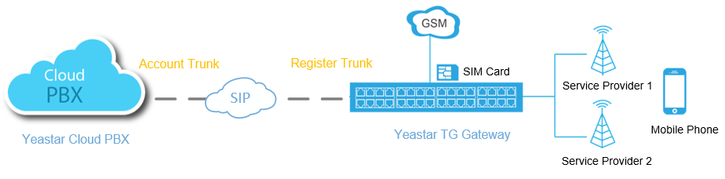
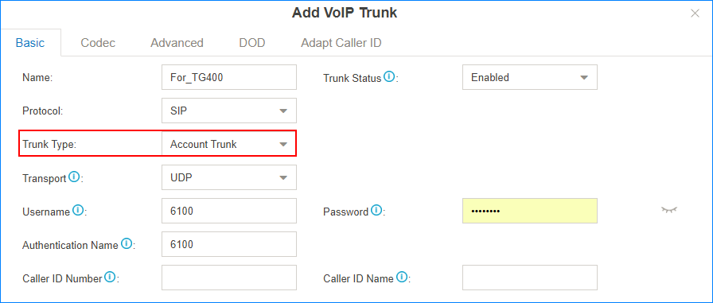
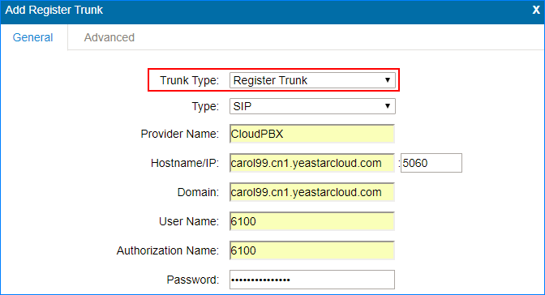
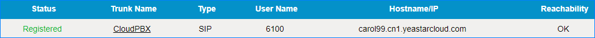
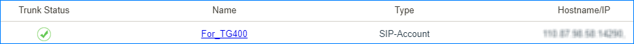
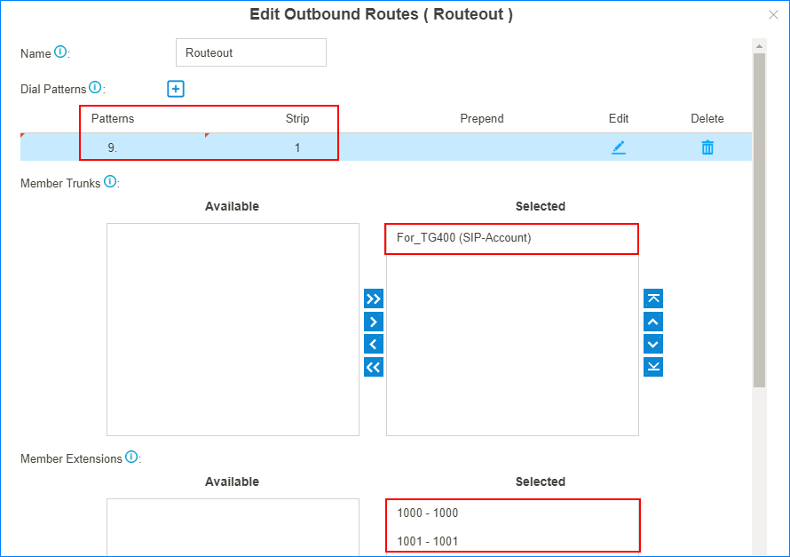
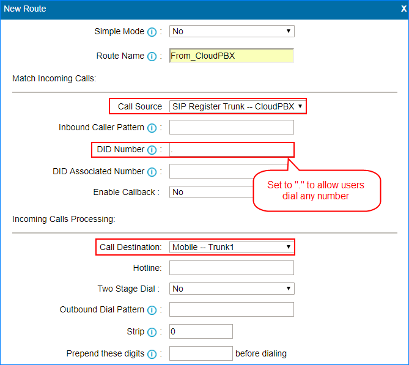
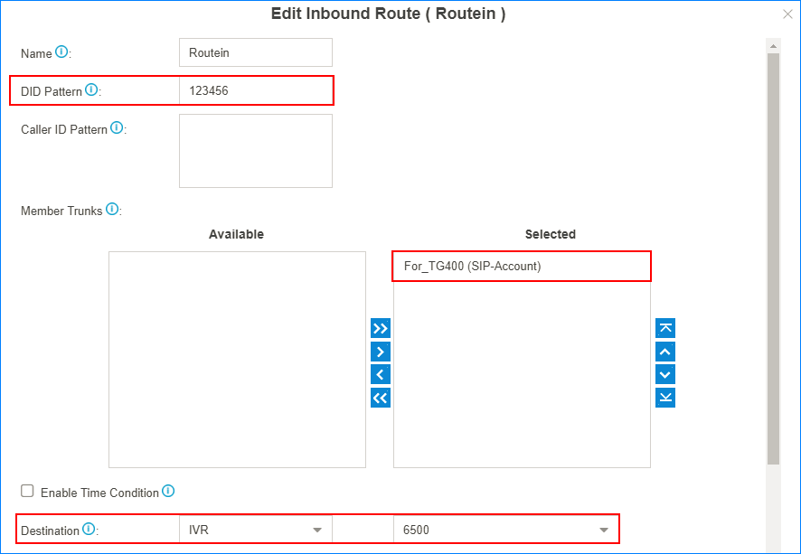
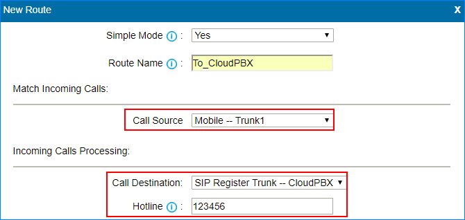

Interconnect Yeastar Cloud PBX and TG Gateway
Connect Yeastar Cloud PBX and Yeastar TG gateway to extend GSM/3G/4G trunks.
In the following instruction, we tested with Yeastar Cloud PBX version 81.6.0.3 and Yeastar TG400 version 91.2.0.13.
After connecting the Yeastar Cloud PBX and the Yeastar TG gateway, the users of Yeastar Cloud PBX can achieve the followings:
- Make outbound calls through GSM/3G/4G trunks of TG gateway
- Receive inbound calls from GSM/3G/4G trunks of TG gateway

1. Connect Yeastar Cloud PBX and TG400
- On the Yeastar Cloud PBX, create an Account Trunk.
- Go to , click Add.
- Set the trunk as an Account Trunk.

- Name: Set a name to help you identify it.
- Trunk Status: Select Enabled.
- Protocol: Select SIP.
- Trunk Type: Select Account Trunk.
- Transport: Select UDP.
- Username: Use the default or change the number.
- Password: Use the default or change the password.
- Authentication Name: Set to the same with Username.
- Click Save and Apply.
- On the TG400, create a register-based VoIP trunk.
- Go to , click Add VoIP Trunk.
- Configure the VoIP trunk.

- Trunk Type: Select Register Trunk.
- Type: Select SIP.
- Provider Name: Set the trunk name.
- Hostname/IP: Enter the domain or IP address of the PBX; Enter the SIP port.
- Domain: Enter the domain or IP address of the PBX.
- User Name: Enter the Username of Account Trunk that is created on the PBX.
- Authorization Name: Enter the Authentication Name of Account Trunk that is created on the PBX.
- Password: Enter the Password of Account Trunk that is created on the PBX.
- Click Save and Apply Changes.
- Check the connection status.
- On the TG400, go to to check the trunk status.
If the connection is successful, the status will show "Registered".

- On the Yeastar Cloud PBX, go to PBX
Monitor to check the trunk status. If
the connection is successful, the status will show
 .
.
- On the TG400, go to to check the trunk status.
2. Make Outbound Calls Through GSM/3G/4G Trunks
- On Yeastar Cloud PBX, create an outbound route to allow users make outbound
calls through TG400.
- Go to , click Add.
- Configure the outbound route.

- Name: Set the outbound route name.
- Dial Patterns: Set the dial
patterns according to your needs.
In our scenario, set Patterns to
9., set Strip to1; users should dial prefix 9 before the target number. For example, to call number 123456, you should dial 9123456. - Member Trunks: Select the trunk that is connected to TG400 to Selected box.
- Member Extensions: Select extensions to Selected box. The selected extensions can make outbound calls through TG400.
- Click Save and Apply.
- On TG400, set an “IP to Mobile” route to allow the PBX users make outbound
calls through the GSM/3G/4G trunks.
- Go to , click Add IP to Mobile Route.
- Configure the "IP to Mobile" route.

- Simple Mode: Select No.
- Route Name: Set the route name.
- Call Source: Select the trunk that is connected to the PBX.
- DID Number: Set to
.to allow users dial any number. - Call Destination: Select a Mobile trunk or a Mobile trunk group.
- Click Save and Apply Changes.
- Make a call to test.
For example, the PBX extension 1000 dials 91588035242, the user 1588035242 will ring.
3. Receive Inbound Calls From GSM/3G/4G Trunks
- On Yeastar Cloud PBX, create an inbound route to accept incoming calls from TG400.
- Go to , click Add.
- Configure the inbound route.

- Name: Set the inbound route name.
- DID Pattern: Set a DID number. This DID number will be used to match the incoming calls from TG400.
- Member Trunks: Select the trunk that is connected to TG400 to Selected box.
- Destination: Set a
destination for the inbound route.
In our scenario, set the Destination to an IVR. The PBX will route incoming calls of TG400 to the IVR.
- Click Save and Apply.
- On TG400, create a "Mobile to IP" route to route incoming calls to the PBX.
- Go to , click Add Mobile to IP Route.
- Configure the "Mobile to IP" route.

- Simple Mode: Select Yes.
- Route Name: Set the route name.
- Call Source: Select a Mobile trunk or a Mobile trunk group.
- Call Destination: Choose the trunk that is connected to the PBX.
- Hotline: Enter the DID number that is set on the PBX's inbound route.
- Click Save and Apply Changes.
- Make a call to test.
For example, the GSM trunk number is 17283733; use your mobile phone to call 17283733, you will hear the PBX's IVR prompt.